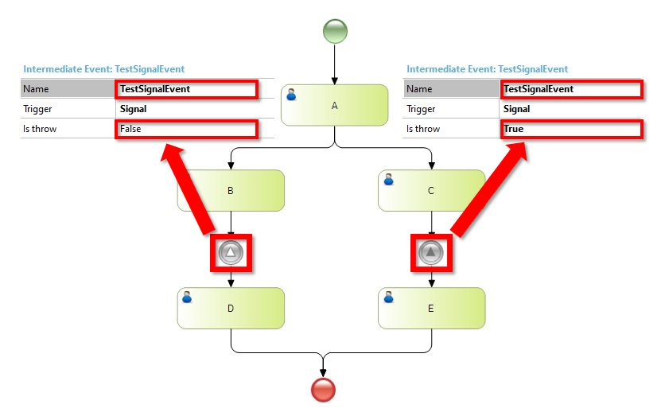

It indicates that the process is triggered when a signal is detected. This signal was broadcast communication from a business participant or another process.
There are two types of Signal Intermediate events: throwing and catching. This is a consequence from a trigger which is a signal what can broadcast or receive.
Sign Event can operate across Proccess levels. For example, a Signal Event could trigger status reports to a customer, indicating that the process had reached and agreed milestone.
When executing A, B and C are created. Then, if you complete B, the process waits until it receives a signal called TestSignalEvent. So, completing the C task, the D will be created because the signal was thrown and the intermediate signal catch it.
Note that both signal events have the same name.

Objects: Business Process Diagram
None Event
Time Event
Conditional Event